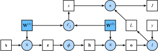

5.3. 前向传播、反向传播与计算图¶
到目前为止，我们都是用小批量随机梯度下降来训练模型。 然而，在实现该算法时， 我们只关心了模型前向传播（forward propagation） 所涉及的计算。 到了计算梯度的时候， 我们只是调用了深度学习框架提供的反向传播函数。
梯度的自动计算 极大地简化了 深度学习算法的实现。 在自动微分出现之前， 即便对复杂模型做很小的改动，也需要 手工重新计算复杂的导数。 令人惊讶的是，学术论文常常不得不花上 许多页篇幅来推导更新规则。 虽然我们必须继续依赖自动微分， 以便把精力集中在有趣的部分上， 但如果你想超越对深度学习的浅层理解， 就应当了解这些梯度 在底层是如何计算出来的。
在本节中，我们深入探讨 反向传播（backward propagation， 更常见的叫法是 backpropagation）的细节。 为了既讲清这些技术、又讲清它们的实现， 我们借助一些基础数学和计算图。 首先，我们把论述集中在一个 带权重衰减（\(\ell_2\) 正则化，将在后续章节中介绍）的 单隐藏层 MLP 上。
5.3.1. 前向传播¶
前向传播（forward propagation，或前向传递，forward pass）指的是 按从输入层到输出层的顺序， 计算并存储神经网络中间变量（包括输出）的过程。 现在我们逐步剖析 一个带单隐藏层的神经网络的机理。 这也许看似枯燥，但用放克音乐大师 James Brown 那句不朽的话来说， 你必须“先付出代价，才能成为老板”。
为简单起见，假设 输入样例为 \(\mathbf{x}\in \mathbb{R}^d\)， 并且我们的隐藏层不包含偏置项。 这里的中间变量是：
其中 \(\mathbf{W}^{(1)} \in \mathbb{R}^{h \times d}\) 是隐藏层的权重参数。 把中间变量 \(\mathbf{z}\in \mathbb{R}^h\) 通过 激活函数 \(\phi\) 之后， 我们得到长度为 \(h\) 的隐藏激活向量：
隐藏层输出 \(\mathbf{h}\) 也是一个中间变量。 假设输出层的参数 只包含权重 \(\mathbf{W}^{(2)} \in \mathbb{R}^{q \times h}\)， 我们可以得到一个输出层变量， 它是一个长度为 \(q\) 的向量：
假设损失函数为 \(l\)， 样例标签为 \(y\)， 那么我们就可以计算 单个数据样例的损失项，
正如我们将会看到稍后要介绍的 \(\ell_2\) 正则化的定义， 给定超参数 \(\lambda\)， 正则项为
其中矩阵的弗罗贝尼乌斯范数 就是把矩阵展平为向量之后 所施加的 \(\ell_2\) 范数。 最后，模型在给定数据样例上的 正则化损失为：
在接下来的讨论中，我们把 \(J\) 称为目标函数（objective function）。
5.3.2. 前向传播的计算图¶
画出计算图（computational graph）可以帮助我们把计算中 运算符与变量之间的依赖关系可视化。 图5.3.1 给出了与上面所描述的简单网络 相对应的图， 其中方块表示变量，圆圈表示运算符。 左下角表示输入， 右上角是输出。 注意箭头的方向 （它们表示数据流） 主要是向右和向上的。

图5.3.1 前向传播的计算图。¶
5.3.3. 反向传播¶
反向传播（backpropagation）指的是计算 神经网络参数梯度的方法。 简而言之，该方法按照微积分中的链式法则（chain rule）， 从输出层到输入层，按相反的顺序遍历网络。 在计算关于某些参数的梯度时， 该算法会存储所需的任何中间变量 （偏导数）。 假设我们有函数 \(\mathsf{Y}=f(\mathsf{X})\) 和 \(\mathsf{Z}=g(\mathsf{Y})\)， 其中输入和输出 \(\mathsf{X}, \mathsf{Y}, \mathsf{Z}\) 是任意形状的张量。 利用链式法则， 我们可以通过下式计算 \(\mathsf{Z}\) 关于 \(\mathsf{X}\) 的导数
这里我们使用 \(\textrm{prod}\) 运算符， 在完成必要的操作（例如转置和交换输入位置） 之后，把它参数相乘。 对于向量，这很直接： 它不过就是矩阵–矩阵乘法。 对于更高维的张量， 我们使用相应的对应物。 运算符 \(\textrm{prod}\) 隐藏了所有这些记号上的负担。
回想一下， 计算图在 图5.3.1 中的 那个带单隐藏层的简单网络， 其参数是 \(\mathbf{W}^{(1)}\) 和 \(\mathbf{W}^{(2)}\)。 反向传播的目标是 计算梯度 \(\partial J/\partial \mathbf{W}^{(1)}\) 和 \(\partial J/\partial \mathbf{W}^{(2)}\)。 为此，我们应用链式法则， 依次计算 每个中间变量和参数的梯度。 计算顺序与 前向传播中的计算顺序相反， 因为我们需要从计算图的结果出发， 一路推回到参数。 第一步是计算 目标函数 \(J=L+s\) 关于 损失项 \(L\) 和正则项 \(s\) 的梯度：
接下来，我们根据链式法则计算目标函数 关于输出层变量 \(\mathbf{o}\) 的梯度：
接下来，我们计算 正则项关于 两个参数的梯度：
现在我们可以计算 最接近输出层的 模型参数的梯度 \(\partial J/\partial \mathbf{W}^{(2)} \in \mathbb{R}^{q \times h}\)。 利用链式法则可得：
为了得到关于 \(\mathbf{W}^{(1)}\) 的梯度，我们需要沿着输出层到隐藏层 继续反向传播。 关于隐藏层输出的梯度 \(\partial J/\partial \mathbf{h} \in \mathbb{R}^h\) 由下式给出
由于激活函数 \(\phi\) 是按元素作用的， 计算中间变量 \(\mathbf{z}\) 的梯度 \(\partial J/\partial \mathbf{z} \in \mathbb{R}^h\) 需要用到按元素乘法运算符， 我们把它记作 \(\odot\)：
最后，我们可以求得 最接近输入层的 模型参数的梯度 \(\partial J/\partial \mathbf{W}^{(1)} \in \mathbb{R}^{h \times d}\)。 根据链式法则，我们得到
5.3.4. 训练神经网络¶
在训练神经网络时， 前向传播和反向传播相互依赖。 具体来说，对于前向传播， 我们沿着依赖关系的方向遍历计算图， 并计算其路径上的所有变量。 这些变量随后被用于反向传播， 其中图上的计算顺序是相反的。
以前面提到的简单网络为例来说明。 一方面， 在前向传播中计算正则项 (5.3.5) 依赖于模型参数 \(\mathbf{W}^{(1)}\) 和 \(\mathbf{W}^{(2)}\) 的当前值。 它们是由优化算法根据最近一次迭代中的反向传播给出的。 另一方面， 反向传播中参数 (5.3.11) 的梯度计算 依赖于隐藏层输出 \(\mathbf{h}\) 的当前值， 而它是由前向传播给出的。
因此，在训练神经网络时，一旦初始化了模型参数， 我们就交替进行前向传播和反向传播， 利用反向传播给出的梯度更新模型参数。 注意，反向传播会复用前向传播中存储的中间值，以避免重复计算。 这样做的一个后果是，我们需要保留 这些中间值，直到反向传播完成。 这也是训练比单纯的预测 需要显著更多内存的原因之一。 此外，这类中间值的大小大致 与网络层数和批量大小成正比。 因此， 使用更大的批量大小训练更深的网络 更容易导致内存溢出（out-of-memory）错误。
5.3.5. 小结¶
前向传播按顺序计算并存储神经网络所定义的计算图中的中间变量。它从输入层进行到输出层。 反向传播按相反的顺序，依次计算并存储神经网络中中间变量和参数的梯度。 在训练深度学习模型时，前向传播和反向传播相互依赖， 而且训练所需的内存显著多于预测。
5.3.6. 练习¶
假设某个标量函数 \(f\) 的输入 \(\mathbf{X}\) 是 \(n \times m\) 的矩阵。\(f\) 关于 \(\mathbf{X}\) 的梯度的维数是多少？
为本章所描述模型的隐藏层添加一个偏置（不需要在正则项中包含偏置）。
画出相应的计算图。
推导前向传播和反向传播的方程。
计算本章所描述模型在训练和预测时的内存占用。
假设你想要计算二阶导数。计算图会发生什么变化？你预计计算需要多长时间？
假设计算图对你的 GPU 来说太大了。
你能把它划分到不止一个 GPU 上吗？
与在更小的批量上训练相比，这样做有什么优缺点？